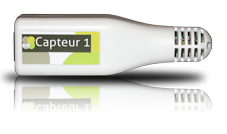

Cultibox : Prenez le contrôle !
Le contrôleur de climat automatisé Cultibox vous aide à cultiver vos plantes et à en suivre l'évolution tout en vous simplifiant la vie.
La Cultibox régule le climat de votre espace de culture de façon autonome en suivant les programmes des prises que vous définissez ou en réagissant automatiquement en fonction des conditions climatiques grâce aux capteurs de température et d'hygrométrie.
Comment ça marche?
La Cultibox est un petit boitier (dimensions sans l'antenne: 12,8cm x 10,6cm x 3,3cm) qui se place à proximité de votre espace de culture afin d'en réguler le climat:
Un logiciel simple d'utilisation vous permet d'établir un programme de culture enregistré sur une carte SD qui une fois connectée à la Cultibox rend votre espace autonome pendant plusieurs mois.
Vous pouvez à tout moment, en connectant la carte SD à votre ordinateur et en utilisant le logiciel Cultibox, visualiser les mesures de climat enregistrées présentées sous formes de courbes claires et précises. Vous pouvez ainsi optimiser vos conditions de culture et augmenter vos rendements.
Un logiciel simple et puissant

La Cultibox est fournie avec un logiciel gratuit et open source comprenant:
- Une interface pour visualiser les conditions climatiques
- Un gestionnaire de programme avancé
- Un calendrier
- Un consomètre
Le logiciel est disponible gratuitement pour tous les systèmes d'exploitation:
 |
Capteur de température et d'humidité
La Cultibox est livrée avec un capteur de température et d'humidité
Grâce à ce capteur vous pouvez visualiser l'évolution de la température et de l'humidité tout au long de votre culture. Vous pouvez ainsi optimiser les conditions climatiques en activant plus ou moins longtemps les différents éléments de votre espace de culture: ventilateurs, extracteurs...
La sonde permet aussi à la Cultibox d'asservir les différents effecteurs de votre système de Culture. Vous pouvez, par exemple, réguler la température à 25°C ou forcer la mise en route d'un ventilateur si l'humidité devient supérieur à 85%RH...
La Cultibox est un système modulable. Vous pouvez ajouter trois autres capteur pour analyser et réguler différents systèmes de culture.
Prises 1000W et 3500W

La Cultibox pilote à distance et simultanément des prises sans fils (jusqu'à 10 prises simultanées).

Deux types de prises peuvent être pilotées en fonction de vos besoins: une prise 3500W permettant de commander des équipements gourmands en puissance électrique (parfait pour une lampe HPS ou MH par exemple) et une prise 1000W pouvant servir pour n'importe quel accessoire. Ce sont des prises ON/OFF parfaites pour piloter tout type d'équipement: un humidificateur, un ventilateur, une lampe ou encore une pompe
La Cultibox permet de réaliser des programmes très précis et de réguler les conditions climatiques de l'espace de culture en combinant les mesures des capteurs et les prises.
Un système évolutif

La Cultibox est conçue pour évoluer dans le temps. Vous pouvez acheter seulement le pack de départ puis commander des capteurs et des prises supplémentaires pour compléter votre ensemble.
Nous tenons particulièrement compte des remarques des utilisateurs. C'est pour celà que les prochains développement de la Cultibox seront un module wifi pour s'affranchir des déplacements de la carte SD, une prise variateur ou encore un capteur PH/EC.